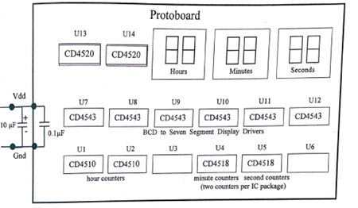
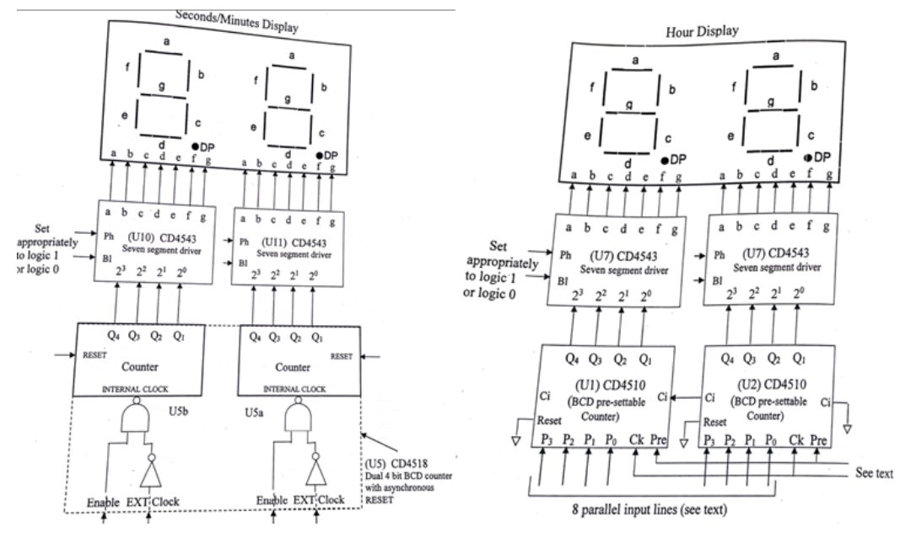
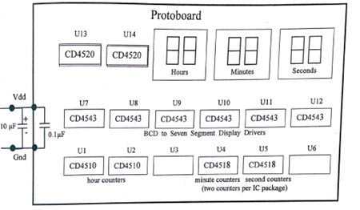
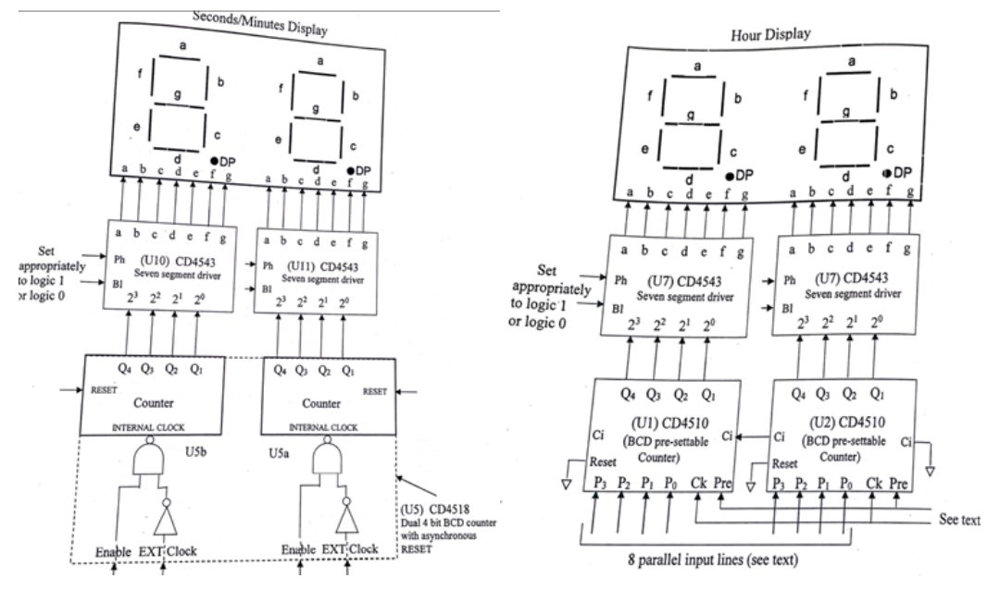
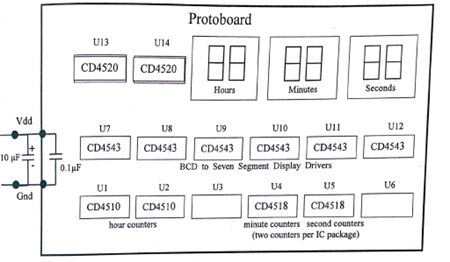
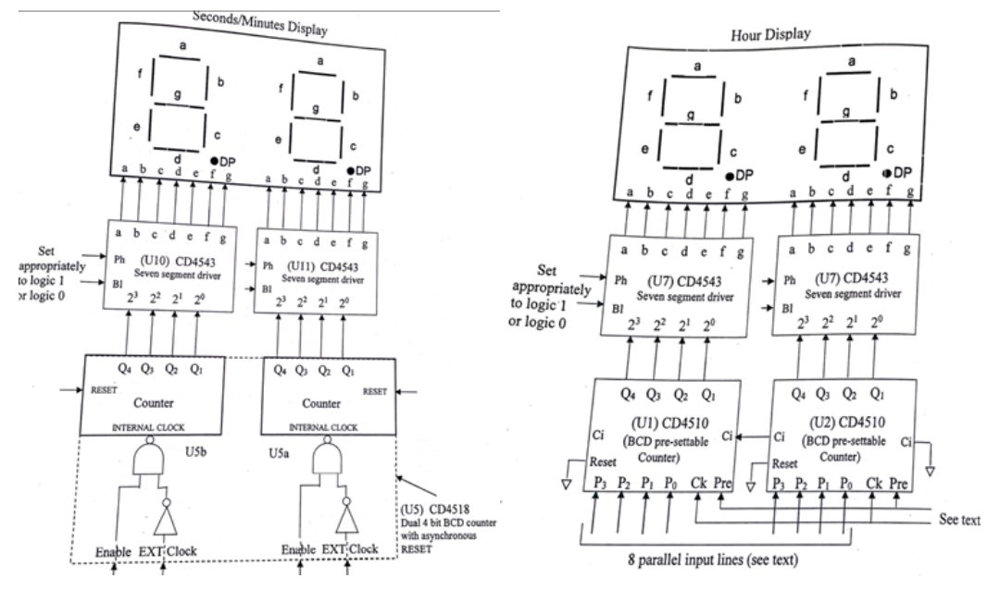

Digital Clock
Final Lab for my EE Lab 1 class. Here I designed and implemented a 24 hour digital clock on a breadboard using various integrated circuits, seven-segment displays, and logic gates.
Components:
Features


Final Lab for my EE Lab 1 class. Here I designed and implemented a 24 hour digital clock on a breadboard using various integrated circuits, seven-segment displays, and logic gates.
Components:
Features